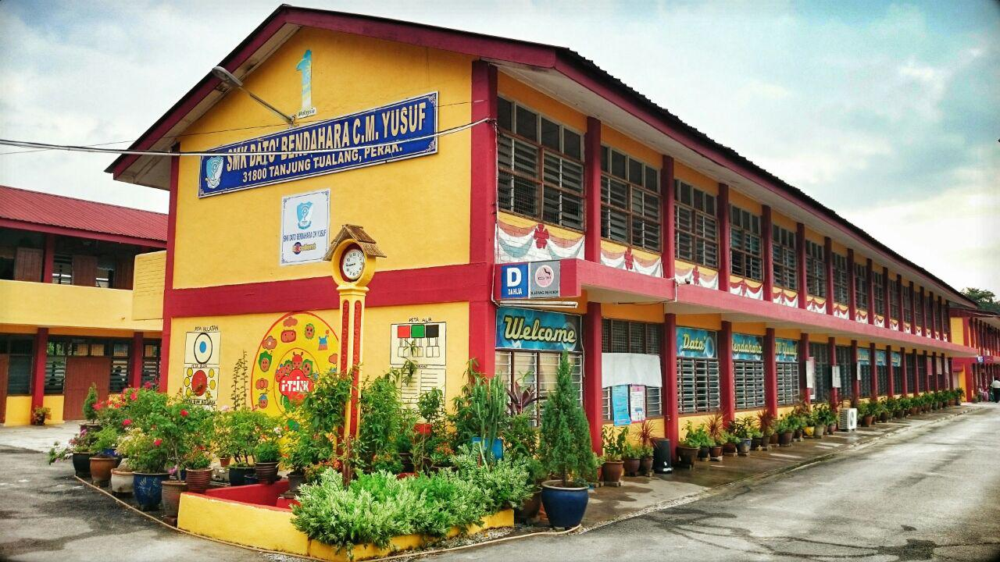
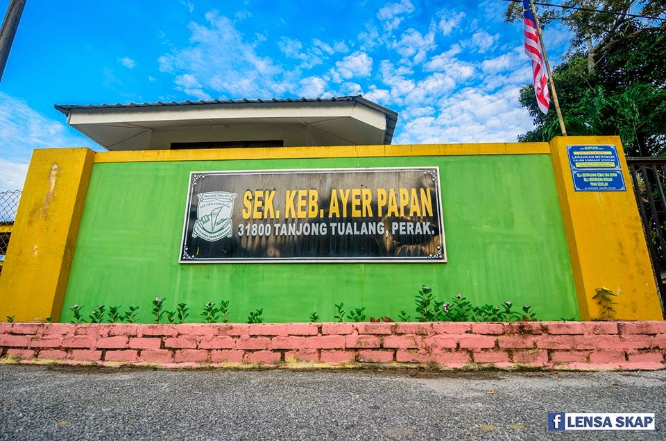

Joined HPD234 Innovative and Creative Students for semesteer 2 & 3

Secondary School
School: SMK Dato' Bendahara CM Yusuf Location: Tanjung Tualang, Perak Years Attended: 2016 - 2021 (Originally 2020, extended due to COVID-19) Notable Achievements:
Become member of Pengawas Sekolah (school prefect) in Form 5
Served as member of Pembimbing Rakan Sebaya (PRS) in Form 3.
Extracurricular Activities:
Joined Kadet Remaja Sekolah (KRS) for five years, achieving the rank of Lans Koperal, and serving as AJK and Platoon Leader.
Joined Kelab Reka Cipta (Innovative Club) as a treasurer.
Participated in the Softball Club as an active member.
Participated in the Malaysian Future Leader School (MFLS) programme to develop leadership skills and talents.

Primary school part 2
School: SK Ayer Papan Location: Tanjung Tualang, Perak Years Attended: 2012 - 2015 Notable Achievements:
Become "Pengawas Pusat Sumber" (school librarian) in the fifth and six grade
Getting 3A for two Bahasa Melayu paper and Science, 2B for English and Mathematics in Ujian Pencapaian Sekolah Rendah (UPSR)
S
Extracurricular Activities:
Joined Tunas Kadet Remaja Sekolah as an active member (TKRS)
Joined Science and Mathematics Club as an active member
Primary School part 1
School: SK Sungai Galah Location: Sungai Galah, Perak Years Attended: 2010 - 2012 Notable Achievements:
Awarded for getting first in class when second grade